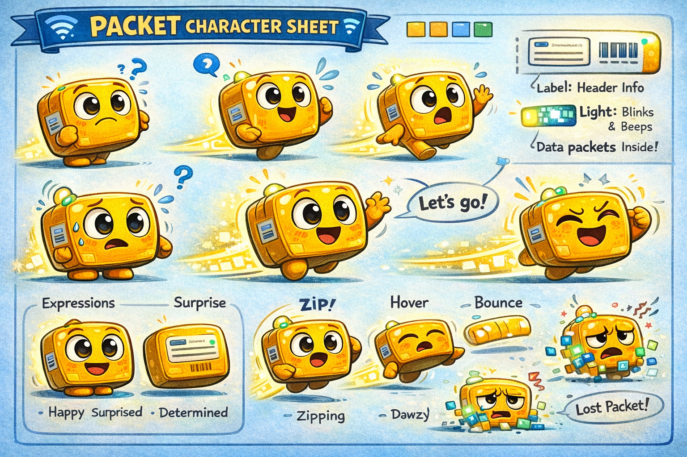

Magical stories from the Network Kingdom

Deep inside Client City, a new Packet is formed whenever someone sends a message. It begins as a small glowing traveler, ready to discover its purpose and journey across the Network Kingdom.
Deep inside Client City, a new Packet is formed whenever someone sends a message. It begins as a small glowing traveler, ready to discover its purpose and journey across the Network Kingdom.
Packet must deliver a royal message, but it is too precious to be read by anyone else. The Encrypter Wizard teaches Packet how to cloak the message in a shimmering lock—only the intended recipient can unlock it.
TCP Guardian teaches Packet the art of reliability, while UDP Racer zooms ahead without waiting.
Packet must prove it is trustworthy and not a trickster virus.
Packet discovers how full names and subdomains connect to find hidden destinations.
Packet learns how data can be stored and retrieved from the Cloud Kingdom.